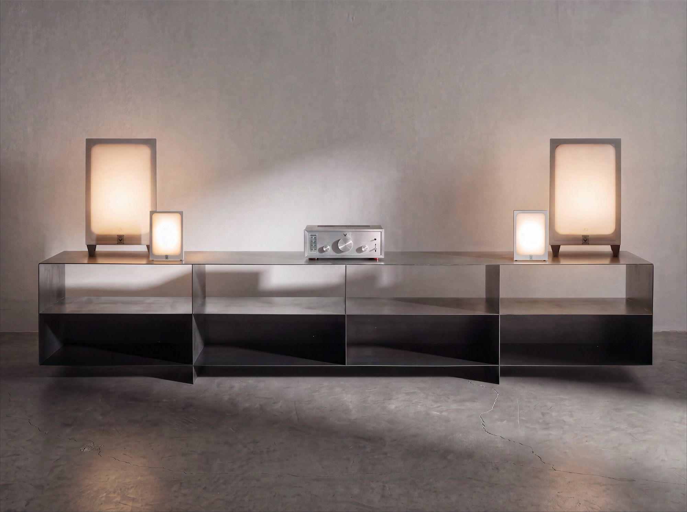
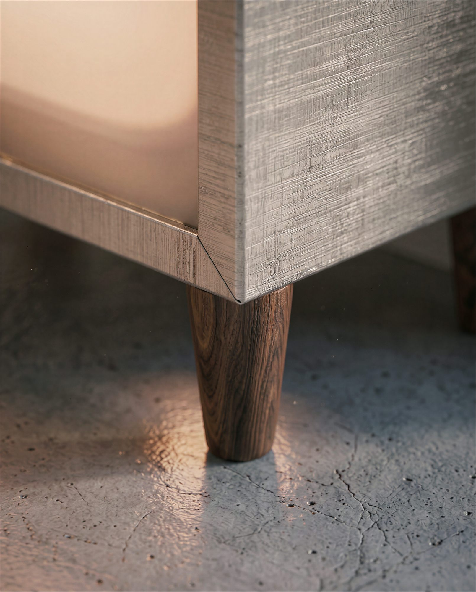
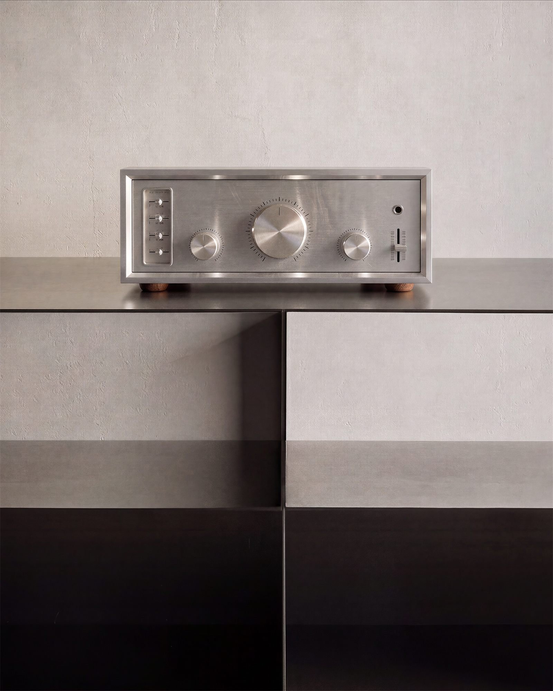
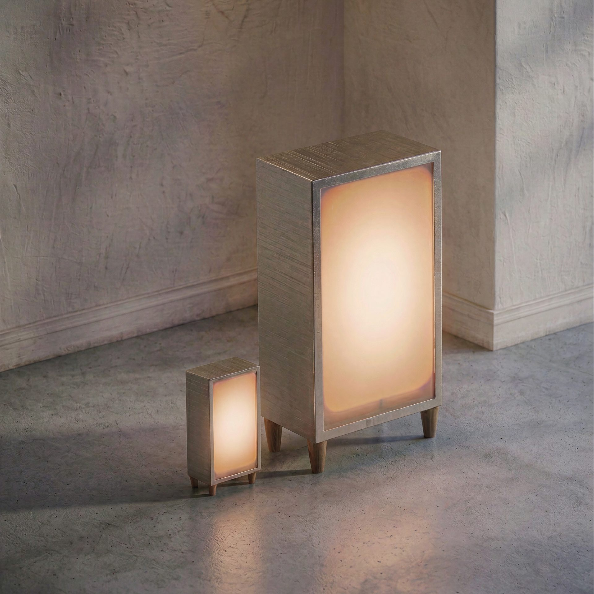
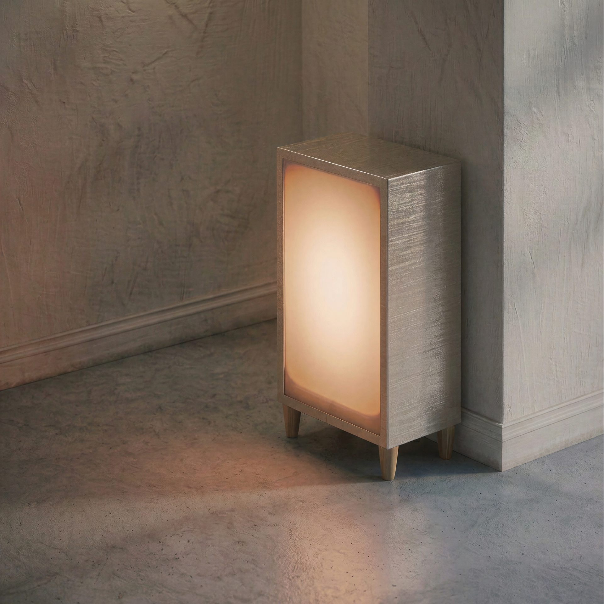
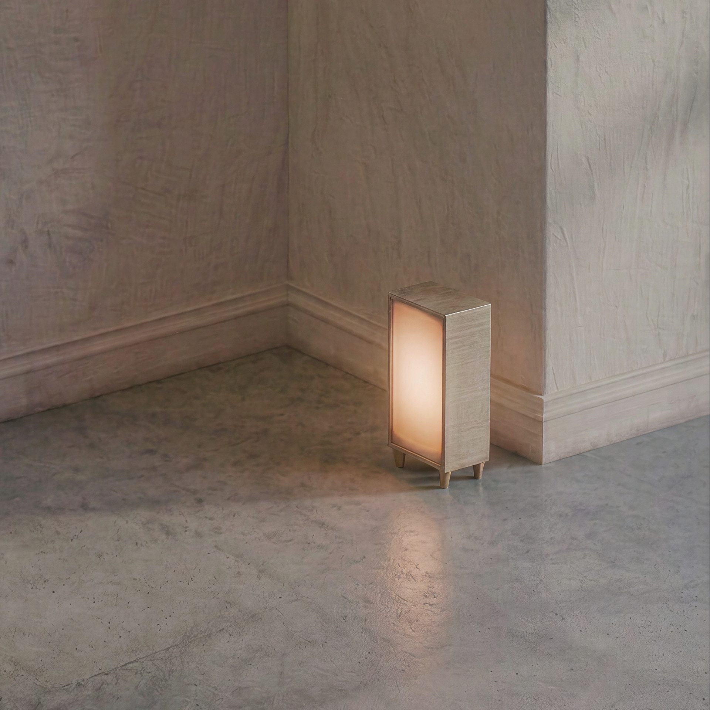

The Stereo Lamp addresses the retreat from interactive and engaging lounge environments. With modern technology phasing out the use of dials and switches, and vinyl and cassette only being kept by enthusiasts, the Stereo Lamp is designed to restore the more intimate relationship people once had with their technology.
Light and sound are the two main components that shape a room and atmosphere, yet our devices rarely integrate them into a central control.


All renders are developed sketches by Earth Original Design, developed into concept renders using Vizcom (Vizcom 2026). Shelf and room based on a reference image (Croft House, n.d.).
The idea of the Stereo Lamp is to unify the two through a specialised interface and a new speaker-styled lamp. The atmospheric lighting will be controlled through a central interface that binds the connection between your lighting and audio devices. This could be your casual listening, or a more energetic party and anything in between. The Stereo Lamp ecosystem is designed to create a more immersive experience for any moment.
Research included the resurgence of retro and classic stereo systems. Especially the continuation and return to turntables and receiver systems. Looking into why people are still so engaged by the technology, despite the limitations to what music and visual systems you’re able to connect with in comparison to other modern technology.

The engagement and user experience of moving something mechanical and feeling the resistance of a dial as the music increases and the grain of the sound system can be heard reveals an authenticity to the action and reaction of the devices.


Early developments had the Stereo Lamp materials leaning more towards wood or veneer, like original midcentury pieces might have used. But further ideation and experimentation showed that more industrial materials made the equipment feel more solid and longer-lasting.
The stereo lamp is still in development and is to be further rendered and pushed into its prototyping stage to showcase the experience.